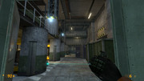

To remove On Rails because “it’s boring” it’s the same to make a remake of Ocarina of Time and remove the Water Temple.
Soldiers are too omni-knowledgeable, I preferred Half-Life’s AI. Not enough aliens. Not enough mano-ey-mano fights with Agrunts. Too few Vortigaunts.
I also think my crouching does not affect the proper height of my character’s hitbox. This is a major pain while fighting Vortigaunts and makes crouching behind something useless if it needs to be done right then and there.
Loving the detail, the voice acting, the animations, etc. The whole game is straight up awesome. Eli’s voice could use a scratchier tone.
Some of the scripted events are a little too easy to break. One of the more obvious examples is early on when a security guard shoots that houndeye that destroys the barrels. If you kill the houndeye the barrels simply ignite and explode a quick few moments later.
All in all it feels like a game mostly complete but not yet gold. I am expecting a plethora of fixes after Xen is released.
For the most part, I think this mod was well done. It’s obvious that a lot of time and effort went into it. I have a few things to nitpick, though:
- The 1st guard you encounter, the blurbs about Barney, etc seem forced
- The music that plays when you get the HEV suit doesn’t really seem appropriate. It doesn’t fit in with anything that’s going on.
- In the following thumbnail, the G-man’s placement is weird. You can just chill and shoot at him (although nothing happens). He should be in a spot that’s not accessible in any way, including where you can shoot
 - Conversations between the NPC’s needs work. It sounds like they’re just saying random things half the time, and it takes too long for one to reply to another.
- Bloom needs to be dialed down a bit.
That’s all I got. Otherwise, this is a fine piece of gaming
He’s in exactly the same spot in Half-Life.
You can also shoot at him in parts of Half-Life 2. There’s one part in particular where you can lay into him with the airboat’s machine gun.
It’s still weird. Doesn’t do immersion any favors.
Holy shit…what a game. Holy shit.
The best way to see this game is not as a mod nor as a game; it’s like the remixing of the original experience that the developers desired.
Level design: The best part of the game. Black Mesa doesn’t copy paste Half Life. It has its own spirit. You can’t go on muscular memory alone (In Unforeseen consequences, in the sewer part I didn’t expected the zombies and barnacles ^_^). Many parts are bigger than in the original. And more impressive. Many frustrating parts were redone (like the minefield in Surface Tension :retard  when conserving iconic parts. I bet my hat this is the part when you, the developers, killed themselves to do right. It shows.
when conserving iconic parts. I bet my hat this is the part when you, the developers, killed themselves to do right. It shows.
Raminator, and the other ones working in Surface Tension…You are pure genius. I liked every inch of the level. The level is the most iconic on Half Life and you made it better. It has as many memorable moments as the rest of the game combined…
The only weak part is Residue processing, and it’s not really weak. It needs a little more guidance, maybe a map of the sector, signals, I don’t know…
Gameplay: the worst part of the game. You have problems testing, I guess…But on the bright side, it’s quick to improve on it, and like many mods, you will improve it incrementally until perfection.
My first issue is the useless normal jump. I don’t mind running to jump then crouching, nor crouch jumping to go to ducts or elevated areas, but I don’t like it in every jump I do. I had problems in Blast Pit because of that.
My second issue is the soldier reaction time and accuracy. They are inhuman. I had problems only with four soldiers…:fffuuu:
My third issue is that the icthyosaurus are weak. Like one/two shot kill.
After On a Rail I’ve modified the skill.cfg to make all of this manageable, following the people’s advice in this forum. I can’t think how stupidly hard this would be in Surface Tension and Questionable Ethics without this adjustments.
My forth issue is that the Vortigaunt attack time is off. But maybe that’s me. I don’t know…
Sound: I fucking like the soundtrack. You didn’t copy Valve’s style in this. Nielsen, you are fucking good.
But there are some issues. First, the music is too loud. This affects the quality of it, and it mixes poorly with the action happening.
And the music some times is misplaced. I remember two parts when this was a problem, but the worst one is when you are going to turn the rocket to kill the tentacle and a music victory appears too early. It has a lot more of sense to put the music when you are near the button (someone did a thread about this already).
Some effects could be better, but thats mostly nitpicking. I can live with it.
The voice acting is good. You cut the cheese of the soldiers enough with the radio filters. I like them. They sound like the deadpan snarkers that the real soldiers should be…
Graphics: Well, I don’t really care about graphics. Only aesthethics. You made a great job bringing a lot of detail to everything. Black Mesa feels a lot more alive than ever. You put a lot of different influences in the game, and this is one of the parts that make the game more than a HD version of the original. I love the posters, the blue screens, the new models. You made my eyes bleed…
There is something wrong in the crowbar and the revolver, but there is a thread about this…and it’s acceptable. If you can change it, cool, but it’s not as primordial as other aspects of the game.
What is missing: There are a lot of iconic sequences and details than matter that are missing.
The saddest one maybe is the jump pad sequence in Surface Tension. There is not a lot of jump pad…A lot of people has talked about the missing chunks of the chapter, so it’s not really necesary to elaborate…this should be restored. It’s up to you.
In On a Rail, there was a part with an elevator and explosives in the upper floor. That was a cool puzzle. And there was a lot more of Xenian vs. Marine fights. They were less about the marines and more about the invasion.
I remember some turrets that were high at the beggining of the level. You had to use a grenade to end it…
And the rocket launcher marine…
And the tripmine traps.
And the level has no desviations with the vehicle at all…but that is not thaaaaaaaat terrible…
I don’t say you should make the level longer but you should add the memorable parts in order to complete the experience.
The last thing…the leechs…they should come back. Maybe they should bite you only to annoy, not to make damage…
Veredict: I love the work you put on this. It’s a really fun mod to play, but you have to adjust it first to be really enjoyable…
There is a big chunk of Surface Tension missing.
You brought Half Life to life again. This has the potential to become the definitive version of the game…if you continue improving what you have.
It’s a 8/10 for me. When you improve on the gameplay, I will edit this, I swear. This is not perfect, but it’s like a good wife, it’s not perfect but should make you happy (I hope this doesn’t sound lame, I think this is a good compliment in this times, hahahahaha).
Congratulations Black Mesa team…
You should complete the game before to write a review. If you want to write a good review.
I’ve never given 10/10. NEVER. Because that’s the perfection and every game I’ve seen so far had things which could have been done better.
As for Black Mesa I’m almost in the lambda complex but this game is far from 10, and even from 9. I’ve to think about it, to see it till the end to decide if it’s a 5 a 6 or a 7.
Now don’t (╯°□°）╯︵ ┻━┻ people. If you disagree with me I’m not interested at all so keep it for yourself, I’m saying it for the sake of the developers, so that they can read my point of view. I agree with ValveTime review pretty much I’ll write a full review with a score after I’ll have completed the game. Sure it will be a judgment based on what I’ve got on my hands, not about what it will be after few bug fixes and the release of Xen. But this is obvious, isn’t it? I’ll remark it anyway: I like to remark and state the obvious!
edit: and yes devs: I was talking about a vote given as the recreation of half life with the source engine, not as a modification score. if was just for that 9/10 only because I don’t give 10/10 for what I said above. 
Hello everyone. First of all, I must say I’m in total love with this mod, being a veteran and old time Half-life player I really felt the nostalgia kicking in by playing it and it left me with quite a smile I must say. Although as many mentioned before there are several things in the mod that need to be improved/changed.
Since the mod was released I’ve been browsing the forums here and I’ve noticed a significant number of players complaning about some gameplay issues/parts that were cut even though they were the most important ones…, etcetera.
My intention with this thread is to focus all the feedbacks/suggestions that has been posted since the mod came out into one single thread in order to make life easier for the developers and of course better sort it out.
If you have a feedback/suggestion do so by writing the number, putting it in Italic and highlighting it out as in the example below:
"[i]100. My headcrab is bigger than yours.[I/]
«further explanation or feedback is provided below»"
Having said that here’s so far the main feedbacks/suggestions (those I remember, feel free to post more) that I’ve found out, :
1. HECU / Xen battles are pratically rare in BM. This was key component and greatly added to the story in the original Half-life… I remember the first time I played Half-life I usually loaded a game more than 10 times whenever I got to a HECU / Xen battle scene because it was so epic and added to the atmosphere.
2. Hordes of Marines and far fewer numbers of Aliens in comparison also dissapointed me a bit, it felt as if I was fighting an invading Human force rather than an Alien invading force
3. With so many headcrabs scattered around the facility why aren’t HECU Marine Zombies found? Don’t headcrabs fancy HECU Marine’ heads?
4. “Forget about Freeman! We are cutting our losses and pulling out even though we come in horde numbers” emphasis added. Again the rare/few instances of HECU / Xen battles scenes in BM does not depict the reason why are the military pulling out. Even after the evacuation took place Gordon still faces great numbers of HECU stragglers (in my opinion this is greatly represented, high levels of desperation and pressure always results in cold harsh decisions being made and hence many Marines being left behind) when it should be the other way around. I hardly doubt a single man is the primary reason why the military sustained heavy casualties, the obvious answer to the casualty question is obviously the Alien invading force, unfortunately this is poorly represented throughout the game.
5. Lack of HECU / Xen air battles. As far as I remember the original Half-life only depicted one scene of air battle between them but since mods are about improvements why not? When you reach the surface area near the entrance to the Lambda Complex you only see Manta Rays and Jet Fighters flying around in circles, no dog fights in the sky, no HECU / Xen battles in the ground.
Can’t remember more at this point, if you have any please feel free to add.
I’m sorry to be saying this, but I really think that Black Mesa is better than the original game.
Combined with the technology and graphics limitations of the time HL was released, compared to BM, BM is far more superior. Now I’m not saying the graphics and technology of HL were bad, I’m saying that it was really good for it’s time, but are now very dated. Don’t get me wrong, source is somewhat dated too, but it has most of the same technology you would see in most modern games, like SSBUMP, refraction, specularity, etc. Not to mention the team even wrote their own shaders; like the aberration of the RGB spectrum when you get hurt, and the HUD Post-Processing. They made On a Rail less tedious (though I think it is a little bit too short), they shortened Surface tension, to make it more feasible, and to bring it in line with the other chapters. (Though they could of put more Military VS. Aliens battles to show that the Army is slowly getting stomped by the aliens and Freeman, and resort to a desperate attempt to mortar the facility.) They expanded the maps, just so much was done. What I really like is how they put more emphasis on the voice acting, it sounds less silly than the original, while still retaining it’s roots. Another nice little addition was how they expanded the retcons in Half-Life to actually include Eli and Kleiner.
If you disagree at all, then I can respect that. I’m not very cynical by all means. I hate to have blunt criticism. I respect what’s given to me, and I feel grateful that they even took the time to even make such a good mod.
11/10.
The mod brought me back in time, pretty much. I was so engaged playing it last week I’d often lose track of time. Is it better than Half-Life? Well, it’s at least equal to it.
Analysing things a bit further, the AI still behaves like 90’s AI, in my opinion; which is not necessarily a bad thing.
And the soundtrack? Well, musically – technically – it all sounds nice, but I had to significantly lower the standard music level, or I’d have a totally messy gameplay experience. Did not add to the atmosphere as I’d like it to have added, I’m afraid.
And is it fair to rank it? Out of 10? I don’t know. The nostalgia is indeed with me, even as I write this, so it has to be at least 9.5/10.
Well worth the long wait. A big thank you to the devs.
BM is a great Mod. In fact its quality is such that its not distinguishable
from a well made game developed in a professional studio.
I can only say take your time for the Xen-part and dont rush things for
a release. If the same quality is offered for Xen than i gladly wait untill
its finished.
That said,i also count to those who missed the parts of on the rail and
surface tension that were cut out. Well,and i missed the relativly slow
flying riflegrenades. The grunt AI in the original game was better,but its
probably HL2 that simply has the weaker AI-code on which the BM grunts
are based. I mean back in the day when i played HL2 the first time i simply
found the AI noticable bader than in the original.
Well,personaly i think this Mod will give the HL2 modding community new
impulses.
Just a few things that I wasn’t a big fan of when playing the mod:
- Soldiers
I know that everyone’s been complaining about the difficulty of the soldiers, and I agree. While they’re not impossible, they’re harder than I would have liked them to be.
- Weapon selection
In every Half-Life game, choosing weapons has always started from the first weapon in that number. It’s become second nature to hit whatever number the right amount of times to get the right weapon. But it threw me off for a while at the beginning when choosing a weapon in the same number starts at the activated weapon, so I’d go past the weapon I wanted. I worked with it, but I hope it’s reverted along with the addition to Xen.
- The tactical map
This is the only thing that really got me. Maybe I was just doing it wrong, but the tactical map in BM is really hard to do given the situation the player is in. The gargantua is hitting the thing the player is standing on, which causes Gordon to jolt and move around, and there was no (at least for me) indicator of how to work the map.
Otherwise, I still enjoyed the mod.
Were you not able to see the mouse cursor and the fire button when you approached the map? Some people have mentioned issues like this.
my only real complaint was the changes made in the maps that cutted things, more specifically Surface Tension, but I enjoyed the new On A Rail though
the marines could be changed really, but not really necessary, however I’m really not in the mood to keep changing stuff outside the game to play it
I saw a glitchy red dot that didn’t seem to do a lot. I also had my folder in steamapps/sourcemods named “Black Mesa” instead of “BMS” so maybe that had something to do with it.
“Be careful what you wish for. You just might get it.”
Ie. the mod was more purist than even I was expecting. If anyone cares, I can give a slightly more detailed review later. 
Gameplay - 9/10
Soundtrack - 8/10
Graphics - 9/10
Half-Lifeness - λ/10
Overall - better than most retail games
I’ve already written my praise for the game elsewhere, for me it’s a 10 when considering all aspects of it. Amazing.
I’d like to share my complaints in here before I forget though, as feedback:
- Too loud music at times, felt out of balance, you couldn’t hear anything but the music when it was on.
- Eli voice acting
- Tactical map controls. Felt unclear and not accurate, button was acting strange too.
- A few random crashes
- Lightning and shadows on some outside chapters, mostly the desert ones - maybe
- Crowbar’s pretty short reach when hitting headcrabs, took a while to get the timing right
- Even though jumping wasn’t a problem for me, I can see it being improved a little so crouch isn’t needed everywhere.
Still a lot better than most AAA titles out there.